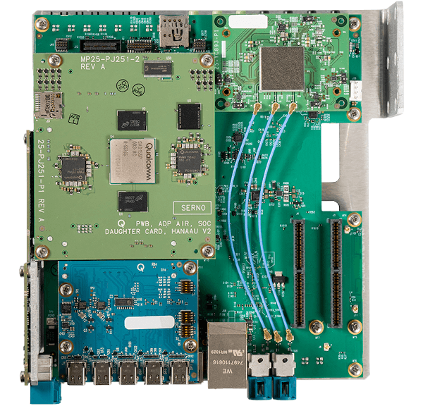
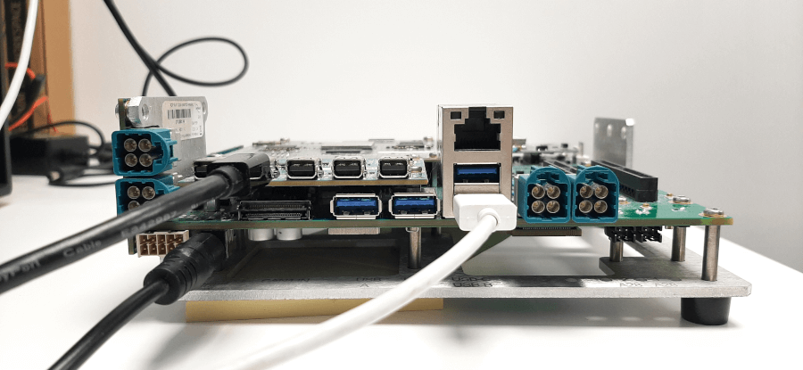
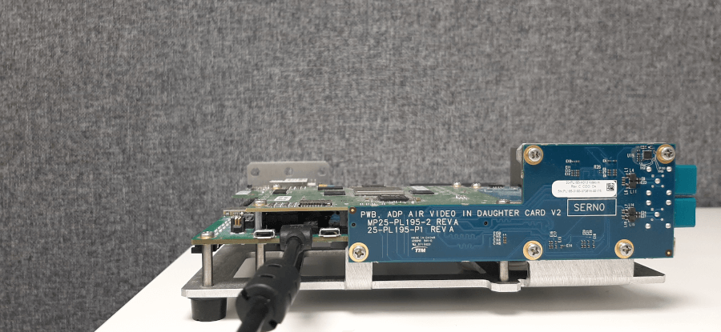
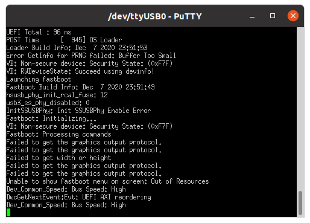
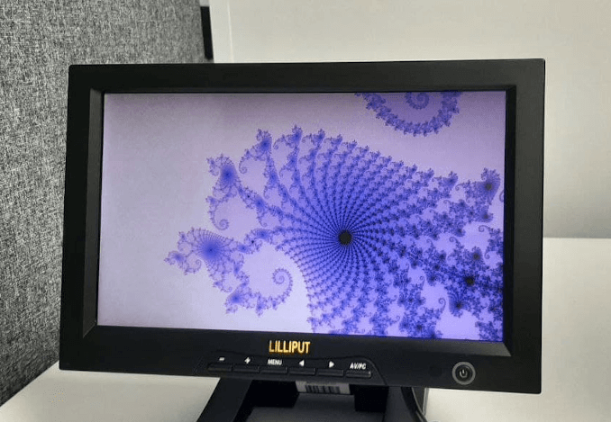

Flashing and Running an Image on the 8155P
Qualcomm Snapdragon 8155P Board
This is a top view of the Qualcomm Snapdragon 8155P board.

Set up the wiring
Several cables between the PC and the board are needed for flashing and debugging applications on the board:
- Power connector
- Micro USB is the FT serial console output
- Normal USB is the QFIL/Fastboot port (USB-A - USB A/USB C cable)
- DisplayPort cable is for Graphical output
- Ethernet port, for loading an application dynamically.

This is a wiring configuration example: power is ON, male USB-A is connected for flashing images, DisplayPort cable is conected for Graphical output.

Micro USB is connected for using the FT serial console.
Switch to Fastboot Mode
To flash images on Qualcomm Snapdragon 8155P board install Fastboot Tool on Host OS. See, Fastboot Tool
Before flashing switch the board to the Fastboot Mode:
- Open serial connection with the board:
putty /dev/ttyUSB0 -serial -sercfg 115200,8,1
- There are 2 options:
- On the device, hold the volume key and power cycle the device.
- Or press down arrow on the UART shell and power cycle the device.
- If the board switches to Fastboot Mode successfully, it prints following console output:

Another way to check the board is in Fastboot Mode is to run the command:
fastboot devices
Flash images
The build script produces set of images for board partitions.
boot.img, perf_dyn.img, misc_dyn.img, abl.elf, etc
After switching to Fastboot Mode images can be flashed to the board.
- When setting up for the first time, follow the images flashing procedure from GHS ES7_FinalCopy/ES7_customer_package_readme.docx:
cd /work/ghs/sa8155/es7/es7_dev_env/hlos_dev_boot/apps/ghs_apps_proc/qc_bsp/out/chk/bin/target fastboot flash abl abl.elf fastboot flash boot vmm-adp-gvm-sa8155/boot.img fastboot flash perf_dyn_a vmm-adp-gvm-sa8155/perf_dyn.img fastboot flash misc_dyn_a vmm-adp-gvm-sa8155/misc_dyn.img cd /work/ghs/sa8155/es7/es7_dev_env/ES7_FinalCopy/Images/sa8155_hyp fastboot flash hyp_a hyp.mbn fastboot flash tz tz.mbn fastboot flash apdp apdp.mbn cd /work/ghs/sa8155/es7/es7_dev_env/hlos_dev_boot/apps/ghs_apps_proc/qc_bsp/out/chk/bin/target/fs fastboot flash gh_sys sys.img fastboot flash gh_persist ghs_persist.img fastboot flash gh_test ghs_test.img.sparse cd /work/ghs/sa8155/es7/es7_dev_env/hlos_dev_boot/apps/ghs_apps_proc/qc_bsp/prebuilt_NHLOS/adsp/asic_8150 fastboot flash adsp adsp.img cd /work/ghs/sa8155/es7/es7_dev_env/hlos_dev_boot/lagvm/LINUX/android/out/target/product/msmnile_gvmgh fastboot flash vendor vendor.img
Note: ES7_FinalCopy/ES7_customer_package_readme.docx is a part of QC [ES7] Customer package. Contact Qualcomm Support for more information.
- If this is not the first time flashing, then the monolith part should be flashed:
cd /work/ghs/sa8155/es7/es7_dev_env/hlos_dev_boot/apps/ghs_apps_proc/qc_bsp/out/chk/bin/target fastboot flash boot vmm-adp-gvm-sa8155/boot.img
- Restart the board.
Run Qt application on the board
- Open serial console:
putty /dev/ttyUSB0 -serial -sercfg 115200,8,1
- Execute the command:
rt <application name> Initial
- Run Qt application example:

Qt application is running on Qualcomm Snapdragon 8155P Board and displayed on the connected screen.